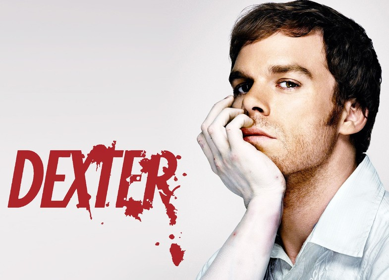

Merhaba, Ben Bektaş Talayoğlu İstanbul'da yaşıyorum. Yazılım ile uğraşmayı seviyorum.
Kendimi geliştirmeye devam ediyorum.
Dizi Konusu : Dexter Morgan (Michael C. Hall), Miami Metro Polis Departmanı'nda kan sıçrama analisti olarak çalışıyor ve aynı zamanda bir seri katil olarak gizli bir hayat sürdürüyor.
Miami'de geçen hikâye Jeff Lindsay'in Dexter romanlarının ilki olan Darkly Dreaming Dexter romanından uyarlanmıştır.
